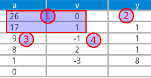

- Số nguyên tố: là số tự nhiên chỉ có 2 ước là 1 và chính nó. - Hai số nguyên tố cùng nhau: là 2 số tự nhiên có UCLN = 1. - Đồng dư: Có 2 số nguyên a, b. M là số nguyên dương khi đó a ≡ b mod m khi và chỉ khi a mod m = b mod m.
Phần tử nghịch đảo trong không gian Zn
+ Giả sử a Є Zn, Khi đó phần tử nghịch đảo của a là a-1 Є Zn sao cho a.a-1 đồng dư với 1 theo modun n. + Điều kiện để tồn tại a-1 trong Zn là UCLN(a, n) = 1. + T/c: Nếu b = a-1 thì a = b-1 Mẹo: Để kiểm tra a có là nghịch đảo của b hay không chỉ cần lấy a*b mod n. Nếu = 1 thì đúng, nếu khác 1 thì sai
Cách tính a-1 trong Zn
VD: Tính 17-1 trong Z26  - B1: Lập bảng gồm 3 cột a, v, y. - B2: Tại 2 dòng đầu tiên điền cột a lần lượt là z và a, điền cột v là 0 và 1, y chưa điền gì. - B3: Tính y (bắt đầu từ dòng 2) bằng cách lấy a tại dòng trên chia dòng dưới lấy phần nguyên. - B4: Tính a bằng cách lấy a tại dòng trên chia dòng dưới lấy phần dư. - B5: Tính v bằng cách lấy v tại dòng trên trừ (v dòng dưới nhân y). - Lặp lại B3 đến khi nào a = 0. - Nếu trước đó a = 1 + Nếu v > 0 => a-1 = v + Nếu v < 0 => a-1 = n + v - Nếu trước đó a != 1 thì không tồn tại a-1 TH trên 17-1 = 26 + (-3) = 23